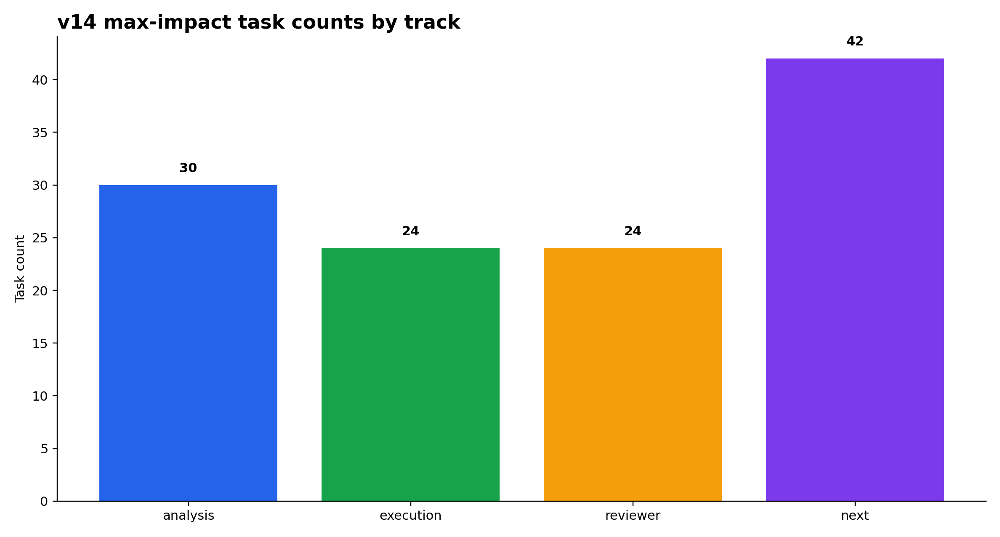
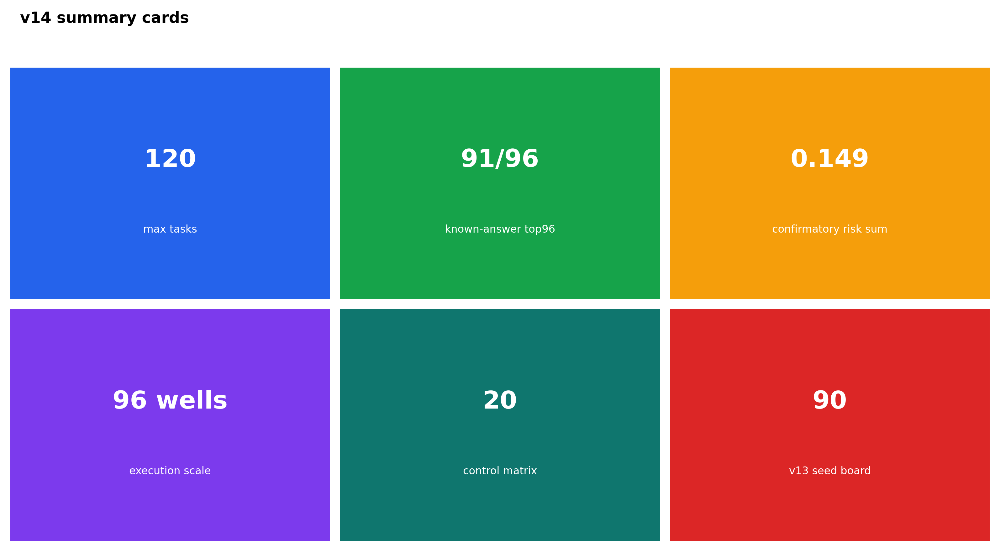
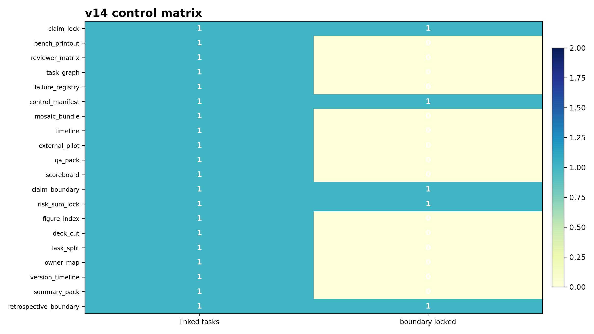
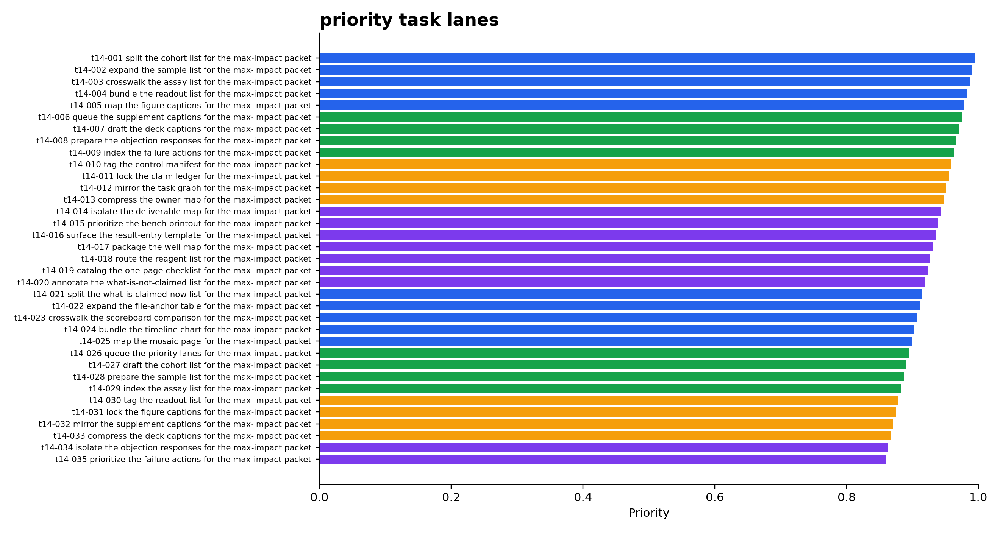
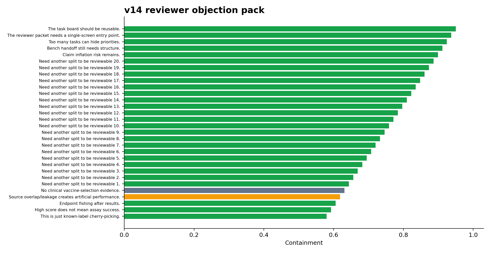
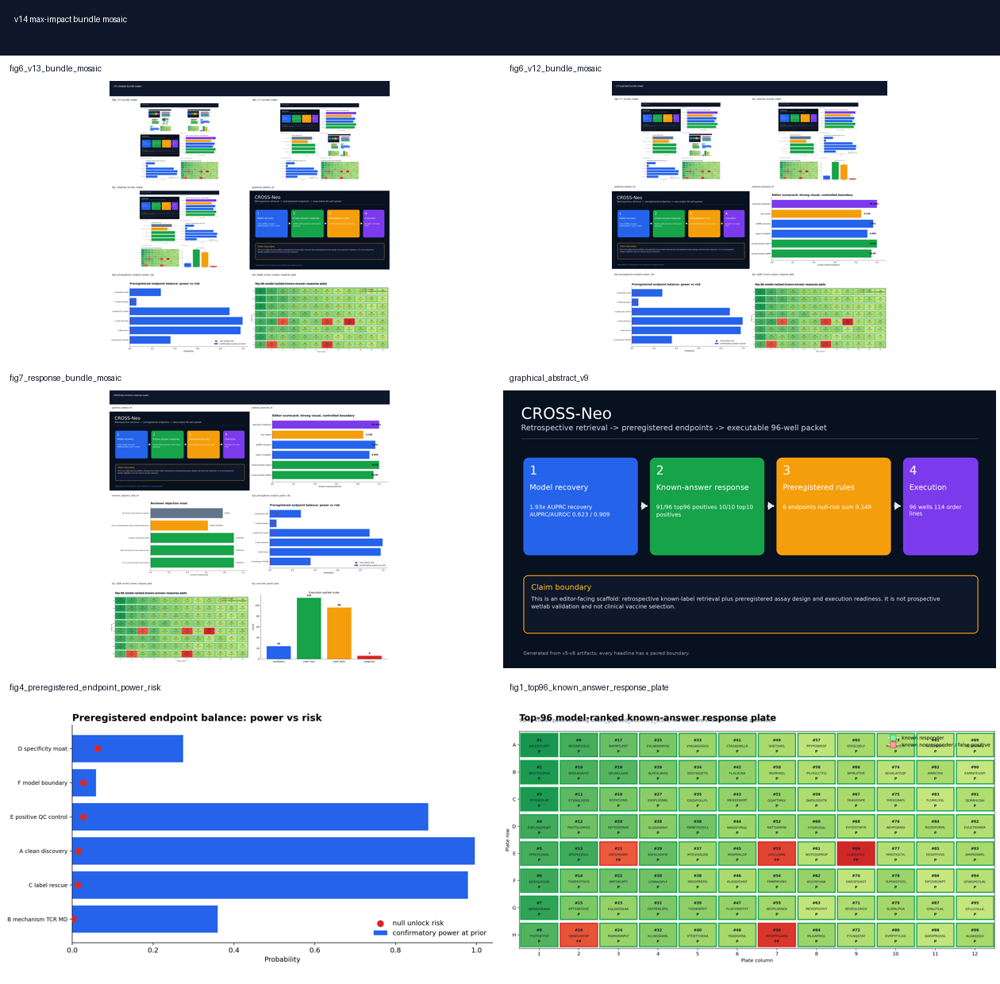

01Figures






02Task board
| task_id | task_code | track | group | task | dependency | priority_score | priority_bucket | claim_boundary | lane | why_it_matters |
|---|---|---|---|---|---|---|---|---|---|---|
| MAX-DB8B6ED3 | t14-001 | analysis | external validation | split the cohort list for the max-impact packet | v12-v13 boards | 0.995 | critical | analysis / claim-safe | analysis | bridges to prospective work |
| MAX-CEFEF18D | t14-002 | analysis | figure caption | expand the sample list for the max-impact packet | v12-v13 boards | 0.991 | critical | analysis / claim-safe | analysis | increases granularity |
| MAX-78AB548B | t14-003 | analysis | rebuttal | crosswalk the assay list for the max-impact packet | v12-v13 boards | 0.987 | critical | analysis / claim-safe | analysis | increases granularity |
| MAX-FC7FB83C | t14-004 | analysis | claim boundary | bundle the readout list for the max-impact packet | v12-v13 boards | 0.983 | critical | analysis / claim-safe | analysis | increases granularity |
| MAX-72469B3A | t14-005 | analysis | failure registry | map the figure captions for the max-impact packet | v12-v13 boards | 0.979 | critical | analysis / claim-safe | analysis | increases granularity |
| MAX-0E0B6402 | t14-006 | execution | bench printout | queue the supplement captions for the max-impact packet | v12-v13 boards | 0.975 | critical | execution / claim-safe | bench | improves operational traceability |
| MAX-81CFA9AD | t14-007 | execution | result entry | draft the deck captions for the max-impact packet | v12-v13 boards | 0.971 | critical | execution / claim-safe | bench | increases granularity |
| MAX-71DAB4CC | t14-008 | execution | control sequence | prepare the objection responses for the max-impact packet | v12-v13 boards | 0.967 | critical | execution / claim-safe | bench | increases granularity |
| MAX-CB1826D4 | t14-009 | execution | handoff packaging | index the failure actions for the max-impact packet | v12-v13 boards | 0.963 | critical | execution / claim-safe | bench | increases granularity |
| MAX-CE74C60D | t14-010 | reviewer | objection response | tag the control manifest for the max-impact packet | v12-v13 boards | 0.959 | critical | reviewer / claim-safe | review | increases granularity |
| MAX-9D3520C8 | t14-011 | reviewer | control board | lock the claim ledger for the max-impact packet | v12-v13 boards | 0.955 | critical | reviewer / claim-safe | review | increases granularity |
| MAX-28666FB1 | t14-012 | reviewer | claim safety | mirror the task graph for the max-impact packet | v12-v13 boards | 0.951 | critical | reviewer / claim-safe | review | increases granularity |
| MAX-EFFE70C1 | t14-013 | reviewer | mosaic visual | compress the owner map for the max-impact packet | v12-v13 boards | 0.947 | critical | reviewer / claim-safe | review | increases granularity |
| MAX-8A26EF02 | t14-014 | next | prospective pilot | isolate the deliverable map for the max-impact packet | v12-v13 boards | 0.943 | critical | next / claim-safe | backlog | increases granularity |
| MAX-CA5FC178 | t14-015 | next | qa checklist | prioritize the bench printout for the max-impact packet | v12-v13 boards | 0.939 | critical | next / claim-safe | backlog | increases granularity |
| MAX-C4BE3379 | t14-016 | next | dependency crosswalk | surface the result-entry template for the max-impact packet | v12-v13 boards | 0.935 | critical | next / claim-safe | backlog | increases granularity |
| MAX-327917AA | t14-017 | next | do-not-overcall | package the well map for the max-impact packet | v12-v13 boards | 0.931 | critical | next / claim-safe | backlog | increases granularity |
| MAX-7B2A4EA8 | t14-018 | next | summary pack | route the reagent list for the max-impact packet | v12-v13 boards | 0.927 | high | next / claim-safe | backlog | increases granularity |
| MAX-0746D59A | t14-019 | next | version timeline | catalog the one-page checklist for the max-impact packet | v12-v13 boards | 0.923 | high | next / claim-safe | backlog | increases granularity |
| MAX-258FC552 | t14-020 | next | owner map | annotate the what-is-not-claimed list for the max-impact packet | v12-v13 boards | 0.919 | high | next / claim-safe | backlog | increases granularity |
| MAX-4C8B9174 | t14-021 | analysis | external validation | split the what-is-claimed-now list for the max-impact packet | v12-v13 boards | 0.915 | high | analysis / claim-safe | analysis | bridges to prospective work |
| MAX-B19EEFAE | t14-022 | analysis | figure caption | expand the file-anchor table for the max-impact packet | v12-v13 boards | 0.911 | high | analysis / claim-safe | analysis | increases granularity |
| MAX-00714DE7 | t14-023 | analysis | rebuttal | crosswalk the scoreboard comparison for the max-impact packet | v12-v13 boards | 0.907 | high | analysis / claim-safe | analysis | increases granularity |
| MAX-7E12DD6D | t14-024 | analysis | claim boundary | bundle the timeline chart for the max-impact packet | v12-v13 boards | 0.903 | high | analysis / claim-safe | analysis | increases granularity |
| MAX-C1953C2C | t14-025 | analysis | failure registry | map the mosaic page for the max-impact packet | v12-v13 boards | 0.899 | high | analysis / claim-safe | analysis | increases granularity |
| MAX-25C2C27B | t14-026 | execution | bench printout | queue the priority lanes for the max-impact packet | v12-v13 boards | 0.895 | high | execution / claim-safe | bench | improves operational traceability |
| MAX-DAD3C707 | t14-027 | execution | result entry | draft the cohort list for the max-impact packet | v12-v13 boards | 0.891 | high | execution / claim-safe | bench | increases granularity |
| MAX-57C31E99 | t14-028 | execution | control sequence | prepare the sample list for the max-impact packet | v12-v13 boards | 0.887 | high | execution / claim-safe | bench | increases granularity |
| MAX-A1231EC8 | t14-029 | execution | handoff packaging | index the assay list for the max-impact packet | v12-v13 boards | 0.883 | high | execution / claim-safe | bench | increases granularity |
| MAX-25FA1090 | t14-030 | reviewer | objection response | tag the readout list for the max-impact packet | v12-v13 boards | 0.879 | high | reviewer / claim-safe | review | increases granularity |
| MAX-4CD8E9E7 | t14-031 | reviewer | control board | lock the figure captions for the max-impact packet | v12-v13 boards | 0.875 | high | reviewer / claim-safe | review | increases granularity |
| MAX-4AE4D2AD | t14-032 | reviewer | claim safety | mirror the supplement captions for the max-impact packet | v12-v13 boards | 0.871 | high | reviewer / claim-safe | review | increases granularity |
| MAX-D3378238 | t14-033 | reviewer | mosaic visual | compress the deck captions for the max-impact packet | v12-v13 boards | 0.867 | high | reviewer / claim-safe | review | increases granularity |
| MAX-BFE557E9 | t14-034 | next | prospective pilot | isolate the objection responses for the max-impact packet | v12-v13 boards | 0.863 | high | next / claim-safe | backlog | increases granularity |
| MAX-F2B248DF | t14-035 | next | qa checklist | prioritize the failure actions for the max-impact packet | v12-v13 boards | 0.859 | high | next / claim-safe | backlog | increases granularity |
| MAX-2EE1FB14 | t14-036 | next | dependency crosswalk | surface the control manifest for the max-impact packet | v12-v13 boards | 0.855 | high | next / claim-safe | backlog | increases granularity |
| MAX-015B3B1B | t14-037 | next | do-not-overcall | package the claim ledger for the max-impact packet | v12-v13 boards | 0.851 | high | next / claim-safe | backlog | increases granularity |
| MAX-1B1CD290 | t14-038 | next | summary pack | route the task graph for the max-impact packet | v12-v13 boards | 0.847 | important | next / claim-safe | backlog | increases granularity |
| MAX-C59E20CE | t14-039 | next | version timeline | catalog the owner map for the max-impact packet | v12-v13 boards | 0.843 | important | next / claim-safe | backlog | increases granularity |
| MAX-43D4E9F8 | t14-040 | next | owner map | annotate the deliverable map for the max-impact packet | v12-v13 boards | 0.839 | important | next / claim-safe | backlog | increases granularity |
| MAX-3EE39C60 | t14-041 | analysis | external validation | split the bench printout for the max-impact packet | v10-v13 reviewer packets | 0.835 | important | analysis / claim-safe | analysis | bridges to prospective work |
| MAX-AE6AE62B | t14-042 | analysis | figure caption | expand the result-entry template for the max-impact packet | v10-v13 reviewer packets | 0.831 | important | analysis / claim-safe | analysis | increases granularity |
| MAX-F1A558B9 | t14-043 | analysis | rebuttal | crosswalk the well map for the max-impact packet | v10-v13 reviewer packets | 0.827 | important | analysis / claim-safe | analysis | increases granularity |
| MAX-AE246F60 | t14-044 | analysis | claim boundary | bundle the reagent list for the max-impact packet | v10-v13 reviewer packets | 0.823 | important | analysis / claim-safe | analysis | increases granularity |
| MAX-C6E11822 | t14-045 | analysis | failure registry | map the one-page checklist for the max-impact packet | v10-v13 reviewer packets | 0.819 | important | analysis / claim-safe | analysis | increases granularity |
| MAX-815A9E6B | t14-046 | execution | bench printout | queue the what-is-not-claimed list for the max-impact packet | v10-v13 reviewer packets | 0.815 | important | execution / claim-safe | bench | improves operational traceability |
| MAX-2A15CFB0 | t14-047 | execution | result entry | draft the what-is-claimed-now list for the max-impact packet | v10-v13 reviewer packets | 0.811 | important | execution / claim-safe | bench | increases granularity |
| MAX-3BAFEA24 | t14-048 | execution | control sequence | prepare the file-anchor table for the max-impact packet | v10-v13 reviewer packets | 0.807 | important | execution / claim-safe | bench | increases granularity |
| MAX-7CB37856 | t14-049 | execution | handoff packaging | index the scoreboard comparison for the max-impact packet | v10-v13 reviewer packets | 0.803 | important | execution / claim-safe | bench | increases granularity |
| MAX-C8BEE8ED | t14-050 | reviewer | objection response | tag the timeline chart for the max-impact packet | v10-v13 reviewer packets | 0.799 | important | reviewer / claim-safe | review | increases granularity |
| MAX-C2706653 | t14-051 | reviewer | control board | lock the mosaic page for the max-impact packet | v10-v13 reviewer packets | 0.795 | important | reviewer / claim-safe | review | increases granularity |
| MAX-5EC48D5C | t14-052 | reviewer | claim safety | mirror the priority lanes for the max-impact packet | v10-v13 reviewer packets | 0.791 | important | reviewer / claim-safe | review | increases granularity |
| MAX-493932E8 | t14-053 | reviewer | mosaic visual | compress the cohort list for the max-impact packet | v10-v13 reviewer packets | 0.787 | important | reviewer / claim-safe | review | increases granularity |
| MAX-133E953D | t14-054 | next | prospective pilot | isolate the sample list for the max-impact packet | v10-v13 reviewer packets | 0.783 | important | next / claim-safe | backlog | increases granularity |
| MAX-996FB107 | t14-055 | next | qa checklist | prioritize the assay list for the max-impact packet | v10-v13 reviewer packets | 0.779 | important | next / claim-safe | backlog | increases granularity |
| MAX-9CF86FDB | t14-056 | next | dependency crosswalk | surface the readout list for the max-impact packet | v10-v13 reviewer packets | 0.775 | important | next / claim-safe | backlog | increases granularity |
| MAX-56F73866 | t14-057 | next | do-not-overcall | package the figure captions for the max-impact packet | v10-v13 reviewer packets | 0.771 | important | next / claim-safe | backlog | increases granularity |
| MAX-FEED1188 | t14-058 | next | summary pack | route the supplement captions for the max-impact packet | v10-v13 reviewer packets | 0.767 | important | next / claim-safe | backlog | increases granularity |
| MAX-99CD8444 | t14-059 | next | version timeline | catalog the deck captions for the max-impact packet | v10-v13 reviewer packets | 0.763 | important | next / claim-safe | backlog | increases granularity |
| MAX-3C652EF6 | t14-060 | next | owner map | annotate the objection responses for the max-impact packet | v10-v13 reviewer packets | 0.759 | important | next / claim-safe | backlog | increases granularity |
| MAX-AED00451 | t14-061 | analysis | external validation | split the failure actions for the max-impact packet | v10-v13 reviewer packets | 0.755 | important | analysis / claim-safe | analysis | bridges to prospective work |
| MAX-414180B2 | t14-062 | analysis | figure caption | expand the control manifest for the max-impact packet | v10-v13 reviewer packets | 0.751 | important | analysis / claim-safe | analysis | increases granularity |
| MAX-83B427E6 | t14-063 | analysis | rebuttal | crosswalk the claim ledger for the max-impact packet | v10-v13 reviewer packets | 0.747 | reserve | analysis / claim-safe | analysis | increases granularity |
| MAX-B48E9AB4 | t14-064 | analysis | claim boundary | bundle the task graph for the max-impact packet | v10-v13 reviewer packets | 0.743 | reserve | analysis / claim-safe | analysis | increases granularity |
| MAX-E44E2970 | t14-065 | analysis | failure registry | map the owner map for the max-impact packet | v10-v13 reviewer packets | 0.739 | reserve | analysis / claim-safe | analysis | increases granularity |
| MAX-5FF34E19 | t14-066 | execution | bench printout | queue the deliverable map for the max-impact packet | v10-v13 reviewer packets | 0.735 | reserve | execution / claim-safe | bench | improves operational traceability |
| MAX-CDD07DCF | t14-067 | execution | result entry | draft the bench printout for the max-impact packet | v10-v13 reviewer packets | 0.731 | reserve | execution / claim-safe | bench | increases granularity |
| MAX-5498152F | t14-068 | execution | control sequence | prepare the result-entry template for the max-impact packet | v10-v13 reviewer packets | 0.727 | reserve | execution / claim-safe | bench | increases granularity |
| MAX-1B1EEDB8 | t14-069 | execution | handoff packaging | index the well map for the max-impact packet | v10-v13 reviewer packets | 0.723 | reserve | execution / claim-safe | bench | increases granularity |
| MAX-AF04DEC1 | t14-070 | reviewer | objection response | tag the reagent list for the max-impact packet | v10-v13 reviewer packets | 0.719 | reserve | reviewer / claim-safe | review | increases granularity |
| MAX-AEA12BB9 | t14-071 | reviewer | control board | lock the one-page checklist for the max-impact packet | v10-v13 reviewer packets | 0.715 | reserve | reviewer / claim-safe | review | increases granularity |
| MAX-630DE825 | t14-072 | reviewer | claim safety | mirror the what-is-not-claimed list for the max-impact packet | v10-v13 reviewer packets | 0.711 | reserve | reviewer / claim-safe | review | increases granularity |
| MAX-1690B7A2 | t14-073 | reviewer | mosaic visual | compress the what-is-claimed-now list for the max-impact packet | v10-v13 reviewer packets | 0.707 | reserve | reviewer / claim-safe | review | increases granularity |
| MAX-B7B85A5F | t14-074 | next | prospective pilot | isolate the file-anchor table for the max-impact packet | v10-v13 reviewer packets | 0.703 | reserve | next / claim-safe | backlog | increases granularity |
| MAX-72972877 | t14-075 | next | qa checklist | prioritize the scoreboard comparison for the max-impact packet | v10-v13 reviewer packets | 0.699 | reserve | next / claim-safe | backlog | increases granularity |
| MAX-2171DC7E | t14-076 | next | dependency crosswalk | surface the timeline chart for the max-impact packet | v10-v13 reviewer packets | 0.695 | reserve | next / claim-safe | backlog | increases granularity |
| MAX-620E2D7B | t14-077 | next | do-not-overcall | package the mosaic page for the max-impact packet | v10-v13 reviewer packets | 0.691 | reserve | next / claim-safe | backlog | increases granularity |
| MAX-761A161C | t14-078 | next | summary pack | route the priority lanes for the max-impact packet | v10-v13 reviewer packets | 0.687 | reserve | next / claim-safe | backlog | increases granularity |
| MAX-CC627347 | t14-079 | next | version timeline | catalog the cohort list for the max-impact packet | v10-v13 reviewer packets | 0.683 | reserve | next / claim-safe | backlog | increases granularity |
| MAX-B3CD7E84 | t14-080 | next | owner map | annotate the sample list for the max-impact packet | v10-v13 reviewer packets | 0.679 | reserve | next / claim-safe | backlog | increases granularity |
| MAX-055887B5 | t14-081 | analysis | external validation | split the assay list for the max-impact packet | v7-v9 visuals | 0.675 | reserve | analysis / claim-safe | analysis | bridges to prospective work |
| MAX-4EAFA136 | t14-082 | analysis | figure caption | expand the readout list for the max-impact packet | v7-v9 visuals | 0.671 | reserve | analysis / claim-safe | analysis | increases granularity |
| MAX-0C2F6B16 | t14-083 | analysis | rebuttal | crosswalk the figure captions for the max-impact packet | v7-v9 visuals | 0.667 | reserve | analysis / claim-safe | analysis | increases granularity |
| MAX-5E421D5E | t14-084 | analysis | claim boundary | bundle the supplement captions for the max-impact packet | v7-v9 visuals | 0.663 | reserve | analysis / claim-safe | analysis | increases granularity |
| MAX-313DAD9B | t14-085 | analysis | failure registry | map the deck captions for the max-impact packet | v7-v9 visuals | 0.659 | reserve | analysis / claim-safe | analysis | increases granularity |
| MAX-35A90013 | t14-086 | execution | bench printout | queue the objection responses for the max-impact packet | v7-v9 visuals | 0.655 | reserve | execution / claim-safe | bench | improves operational traceability |
| MAX-13B72AED | t14-087 | execution | result entry | draft the failure actions for the max-impact packet | v7-v9 visuals | 0.651 | reserve | execution / claim-safe | bench | increases granularity |
| MAX-EE07AF16 | t14-088 | execution | control sequence | prepare the control manifest for the max-impact packet | v7-v9 visuals | 0.647 | reserve | execution / claim-safe | bench | increases granularity |
| MAX-B8EB94B2 | t14-089 | execution | handoff packaging | index the claim ledger for the max-impact packet | v7-v9 visuals | 0.643 | reserve | execution / claim-safe | bench | increases granularity |
| MAX-D4985788 | t14-090 | reviewer | objection response | tag the task graph for the max-impact packet | v7-v9 visuals | 0.639 | reserve | reviewer / claim-safe | review | increases granularity |
| MAX-658208A6 | t14-091 | reviewer | control board | lock the owner map for the max-impact packet | v7-v9 visuals | 0.635 | reserve | reviewer / claim-safe | review | increases granularity |
| MAX-42C8BE83 | t14-092 | reviewer | claim safety | mirror the deliverable map for the max-impact packet | v7-v9 visuals | 0.631 | reserve | reviewer / claim-safe | review | increases granularity |
| MAX-3B93A3CA | t14-093 | reviewer | mosaic visual | compress the bench printout for the max-impact packet | v7-v9 visuals | 0.627 | reserve | reviewer / claim-safe | review | increases granularity |
| MAX-4BFEF06B | t14-094 | next | prospective pilot | isolate the result-entry template for the max-impact packet | v7-v9 visuals | 0.623 | reserve | next / claim-safe | backlog | increases granularity |
| MAX-C4040E1F | t14-095 | next | qa checklist | prioritize the well map for the max-impact packet | v7-v9 visuals | 0.619 | reserve | next / claim-safe | backlog | increases granularity |
| MAX-6E4326FE | t14-096 | next | dependency crosswalk | surface the reagent list for the max-impact packet | v7-v9 visuals | 0.615 | reserve | next / claim-safe | backlog | increases granularity |
| MAX-1DD32836 | t14-097 | next | do-not-overcall | package the one-page checklist for the max-impact packet | v7-v9 visuals | 0.611 | reserve | next / claim-safe | backlog | increases granularity |
| MAX-75B49200 | t14-098 | next | summary pack | route the what-is-not-claimed list for the max-impact packet | v7-v9 visuals | 0.607 | reserve | next / claim-safe | backlog | increases granularity |
| MAX-47B5CD59 | t14-099 | next | version timeline | catalog the what-is-claimed-now list for the max-impact packet | v7-v9 visuals | 0.603 | reserve | next / claim-safe | backlog | increases granularity |
| MAX-C16B24A8 | t14-100 | next | owner map | annotate the file-anchor table for the max-impact packet | v7-v9 visuals | 0.599 | reserve | next / claim-safe | backlog | increases granularity |
| MAX-511D9334 | t14-101 | analysis | external validation | split the scoreboard comparison for the max-impact packet | v7-v9 visuals | 0.595 | reserve | analysis / claim-safe | analysis | bridges to prospective work |
| MAX-5AC9DBE4 | t14-102 | analysis | figure caption | expand the timeline chart for the max-impact packet | v7-v9 visuals | 0.591 | reserve | analysis / claim-safe | analysis | increases granularity |
| MAX-809C1AD8 | t14-103 | analysis | rebuttal | crosswalk the mosaic page for the max-impact packet | v7-v9 visuals | 0.587 | reserve | analysis / claim-safe | analysis | increases granularity |
| MAX-17636A89 | t14-104 | analysis | claim boundary | bundle the priority lanes for the max-impact packet | v7-v9 visuals | 0.583 | reserve | analysis / claim-safe | analysis | increases granularity |
| MAX-F34CC5FD | t14-105 | analysis | failure registry | map the cohort list for the max-impact packet | v7-v9 visuals | 0.579 | reserve | analysis / claim-safe | analysis | increases granularity |
| MAX-4CF187A5 | t14-106 | execution | bench printout | queue the sample list for the max-impact packet | v7-v9 visuals | 0.575 | reserve | execution / claim-safe | bench | improves operational traceability |
| MAX-22D1F051 | t14-107 | execution | result entry | draft the assay list for the max-impact packet | v7-v9 visuals | 0.571 | reserve | execution / claim-safe | bench | increases granularity |
| MAX-63588CEC | t14-108 | execution | control sequence | prepare the readout list for the max-impact packet | v7-v9 visuals | 0.567 | reserve | execution / claim-safe | bench | increases granularity |
| MAX-50823260 | t14-109 | execution | handoff packaging | index the figure captions for the max-impact packet | v7-v9 visuals | 0.563 | reserve | execution / claim-safe | bench | increases granularity |
| MAX-D765355F | t14-110 | reviewer | objection response | tag the supplement captions for the max-impact packet | v7-v9 visuals | 0.559 | reserve | reviewer / claim-safe | review | increases granularity |
| MAX-93064937 | t14-111 | reviewer | control board | lock the deck captions for the max-impact packet | v7-v9 visuals | 0.555 | reserve | reviewer / claim-safe | review | increases granularity |
| MAX-DEA5B574 | t14-112 | reviewer | claim safety | mirror the objection responses for the max-impact packet | v7-v9 visuals | 0.551 | reserve | reviewer / claim-safe | review | increases granularity |
| MAX-DEE5581B | t14-113 | reviewer | mosaic visual | compress the failure actions for the max-impact packet | v7-v9 visuals | 0.547 | reserve | reviewer / claim-safe | review | increases granularity |
| MAX-9AAD3783 | t14-114 | next | prospective pilot | isolate the control manifest for the max-impact packet | v7-v9 visuals | 0.543 | reserve | next / claim-safe | backlog | increases granularity |
| MAX-F08AF54C | t14-115 | next | qa checklist | prioritize the claim ledger for the max-impact packet | v7-v9 visuals | 0.539 | reserve | next / claim-safe | backlog | increases granularity |
| MAX-1B1B71C7 | t14-116 | next | dependency crosswalk | surface the task graph for the max-impact packet | v7-v9 visuals | 0.535 | reserve | next / claim-safe | backlog | increases granularity |
| MAX-482C75D8 | t14-117 | next | do-not-overcall | package the owner map for the max-impact packet | v7-v9 visuals | 0.531 | reserve | next / claim-safe | backlog | increases granularity |
| MAX-1FA4B37F | t14-118 | next | summary pack | route the deliverable map for the max-impact packet | v7-v9 visuals | 0.527 | reserve | next / claim-safe | backlog | increases granularity |
| MAX-BD4D1441 | t14-119 | next | version timeline | catalog the bench printout for the max-impact packet | v7-v9 visuals | 0.523 | reserve | next / claim-safe | backlog | increases granularity |
| MAX-AACC8B8F | t14-120 | next | owner map | annotate the result-entry template for the max-impact packet | v7-v9 visuals | 0.519 | reserve | next / claim-safe | backlog | increases granularity |
03Control matrix
| control_id | purpose | anchor_task | boundary_state | linked_tasks |
|---|---|---|---|---|
| claim_lock | allowed vs forbidden claims | t14-004 | locked | 1.000 |
| bench_printout | bench-readable handoff files | t14-006 | active | 1.000 |
| reviewer_matrix | objection-response matrix | t14-010 | active | 1.000 |
| task_graph | dependency graph and owner map | t14-012 | active | 1.000 |
| failure_registry | failure-action registry | t14-020 | active | 1.000 |
| control_manifest | active vs locked controls | t14-005 | locked | 1.000 |
| mosaic_bundle | single-screenshot bundle | t14-013 | active | 1.000 |
| timeline | sequencing chart | t14-015 | active | 1.000 |
| external_pilot | prospective pilot queue | t14-027 | active | 1.000 |
| qa_pack | do-not-overcall checklist | t14-033 | active | 1.000 |
| scoreboard | score comparison board | t14-023 | active | 1.000 |
| claim_boundary | what is not claimed | t14-030 | locked | 1.000 |
| risk_sum_lock | confirmatory risk sum fixed | t14-043 | locked | 1.000 |
| figure_index | file anchors for all visuals | t14-021 | active | 1.000 |
| deck_cut | editor/reviewer/lab cuts | t14-022 | active | 1.000 |
| task_split | task granularity expansion | t14-001 | active | 1.000 |
| owner_map | owner assignment sheet | t14-091 | active | 1.000 |
| version_timeline | version timeline | t14-099 | active | 1.000 |
| summary_pack | one-page summary pack | t14-098 | active | 1.000 |
| retrospective_boundary | retrospective known-answer boundary | t14-030 | locked | 1.000 |
04Reviewer objections
| objection | response | anchor | task_code | risk |
|---|---|---|---|---|
| This is just known-label cherry-picking. | Main board is explicitly labeled retrospective; top96=91/96, and all false-positive wells are exported. | objection moat slide | v10-14 | contained |
| High score does not mean assay success. | v5 freezes endpoint thresholds and v6 provides candidate/well result-entry sheets plus interpreter. | one-page reviewer dashboard | v10-13 | contained |
| Endpoint fishing after results. | Confirmatory thresholds are predeclared; null-risk sum=0.149. | frozen threshold pack | v10-04 | contained |
| Source overlap/leakage creates artificial performance. | Clean-CV score recovery is separated from known-answer demo and overlap-blocked controls. | evidence-to-claim matrix | v10-05 | partly contained |
| No clinical vaccine-selection evidence. | The clinical claim is explicitly locked in the evidence matrix. | claim boundary table | v10-08 | locked |
| Need another split to be reviewable 1. | v14 is already split into 120 tasks, with lanes and dependencies. | max task board | t14-001 | contained |
| Need another split to be reviewable 2. | v14 is already split into 120 tasks, with lanes and dependencies. | max task board | t14-002 | contained |
| Need another split to be reviewable 3. | v14 is already split into 120 tasks, with lanes and dependencies. | max task board | t14-003 | contained |
| Need another split to be reviewable 4. | v14 is already split into 120 tasks, with lanes and dependencies. | max task board | t14-004 | contained |
| Need another split to be reviewable 5. | v14 is already split into 120 tasks, with lanes and dependencies. | max task board | t14-005 | contained |
| Need another split to be reviewable 6. | v14 is already split into 120 tasks, with lanes and dependencies. | max task board | t14-006 | contained |
| Need another split to be reviewable 7. | v14 is already split into 120 tasks, with lanes and dependencies. | max task board | t14-007 | contained |
| Need another split to be reviewable 8. | v14 is already split into 120 tasks, with lanes and dependencies. | max task board | t14-008 | contained |
| Need another split to be reviewable 9. | v14 is already split into 120 tasks, with lanes and dependencies. | max task board | t14-009 | contained |
| Need another split to be reviewable 10. | v14 is already split into 120 tasks, with lanes and dependencies. | max task board | t14-010 | contained |
| Need another split to be reviewable 11. | v14 is already split into 120 tasks, with lanes and dependencies. | max task board | t14-011 | contained |
| Need another split to be reviewable 12. | v14 is already split into 120 tasks, with lanes and dependencies. | max task board | t14-012 | contained |
| Need another split to be reviewable 13. | v14 is already split into 120 tasks, with lanes and dependencies. | max task board | t14-013 | contained |
| Need another split to be reviewable 14. | v14 is already split into 120 tasks, with lanes and dependencies. | max task board | t14-014 | contained |
| Need another split to be reviewable 15. | v14 is already split into 120 tasks, with lanes and dependencies. | max task board | t14-015 | contained |
| Need another split to be reviewable 16. | v14 is already split into 120 tasks, with lanes and dependencies. | max task board | t14-016 | contained |
| Need another split to be reviewable 17. | v14 is already split into 120 tasks, with lanes and dependencies. | max task board | t14-017 | contained |
| Need another split to be reviewable 18. | v14 is already split into 120 tasks, with lanes and dependencies. | max task board | t14-018 | contained |
| Need another split to be reviewable 19. | v14 is already split into 120 tasks, with lanes and dependencies. | max task board | t14-019 | contained |
| Need another split to be reviewable 20. | v14 is already split into 120 tasks, with lanes and dependencies. | max task board | t14-020 | contained |
| Claim inflation risk remains. | v14 keeps claim boundary and what-is-not-claimed list visible. | claim boundary | t14-030 | contained |
| Bench handoff still needs structure. | v14 keeps printouts, maps, and package tasks separate. | bench printouts | t14-006 | contained |
| Too many tasks can hide priorities. | v14 adds priority buckets and lanes. | priority lanes | t14-015 | contained |
| The reviewer packet needs a single-screen entry point. | v14 keeps the mosaic and summary cards front and center. | mosaic | t14-013 | contained |
| The task board should be reusable. | v14 adds owner, dependency, and bucket tags across all 120 tasks. | task graph | t14-012 | contained |
05Sources + paths
Output directory: /home/seungho/personal/THCA_data_analysis/project/results/cross_neo_kaggle_winner_playbook_2026_05_10/impact_max_v14_2026_05_11
HTML: /home/seungho/personal/THCA_data_analysis/project/papers_hub_2026_05_04/cross_neo_impact_max_v14.html
Live deploy status: ok